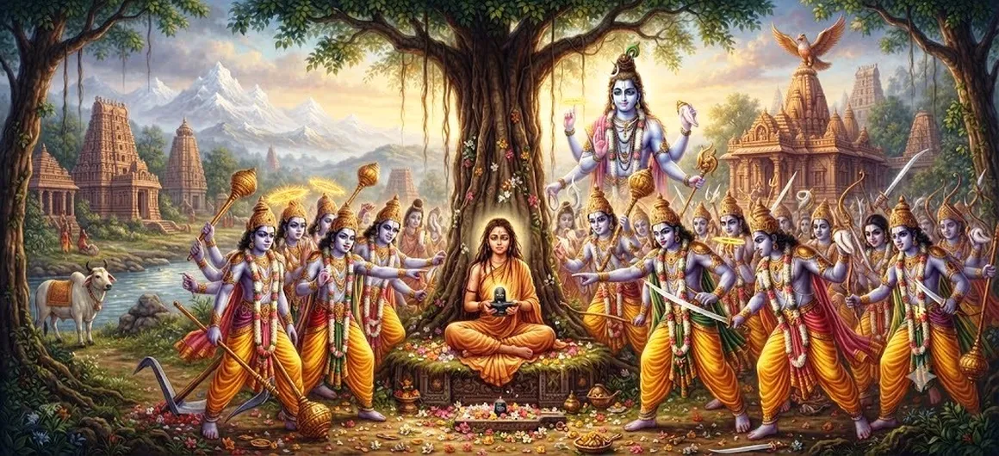

विष्णु के पुत्रों द्वारा उत्पीड़न
शतरुद्र संहिता का अध्याय 22 पवित्र क्रम को जारी रखता है दैवीय अभिव्यक्तियों और उनसे जुड़ी गतिविधियों से जुड़ी कथाएँ भगवान शिव के साथ.
यह अध्याय विष्णु के पुत्रों और के वृत्तांत की ओर मुड़ता है उनसे जुड़ी गड़बड़ी या उत्पीड़न। कथा प्रदान करती है एक और सेटिंग जिसमें दैवीय अधिकार, पवित्र आचरण, सुरक्षा, और आध्यात्मिक व्यवस्था महत्वपूर्ण विषय बन गए हैं।
व्यापक शतरुद्र कथा के भाग के रूप में, अध्याय तैयार करता है निम्नलिखित में वर्णित शिव की एक और अभिव्यक्ति के लिए पाठक अध्याय.
अध्याय 22 की मुख्य बातें
पवित्र कथा
विष्णु के पुत्रों और घटनाओं से जुड़ी कथा की पड़ताल करता है उनके आचरण के आसपास.
ईश्वरीय आदेश
पवित्र के प्रति श्रद्धा बनाए रखने के महत्व पर प्रकाश डाला गया और ईश्वरीय आदेश.
दैवीय सुरक्षा
दैवीय हस्तक्षेप के सुरक्षात्मक आयाम को दर्शाता है।
भक्ति और श्रद्धा
दिव्य प्राणियों और पवित्र प्राणियों के प्रति सम्मानजनक आचरण को प्रोत्साहित करता है सिद्धांत.
आचरण के परिणाम
इस बात पर चिंतन को आमंत्रित करता है कि कैसे कार्य पवित्रता को परेशान या संरक्षित कर सकते हैं सद्भाव.
शिव के बैल अवतार की ओर
पवित्र कथा को शिव के बैल अवतार की ओर ले जाता है निम्नलिखित अध्याय.
इस अध्याय में मुख्य विषय
कथा का परिचय
अध्याय 22 पवित्र आख्यानों के क्रम को जारी रखता है महेशा का लेखा. अध्याय शामिल घटनाओं की ओर मुड़ता है विष्णु के पुत्र और उनके कार्यों से सम्बंधित विघ्न
कथा इस बात का एक और उदाहरण प्रदान करती है कि आचरण कैसा है में वर्णित ईश्वरीय व्यवस्था के अंतर्गत पवित्र महत्वपूर्ण हो जाता है संहिता.
विष्णु के पुत्र और उनका आचरण
अध्याय में विष्णु के पुत्रों को एक कथा के अंतर्गत रखा गया है उनका आचरण पवित्र के विघ्न से जुड़ा हो जाता है सेटिंग.
पवित्र आख्यान अक्सर ऐसी स्थितियों का प्रदर्शन करने के लिए उपयोग करते हैं संयम, जागरूकता, विनम्रता और उचित आचरण का महत्व दैवीय शक्तियों की उपस्थिति.
उत्पीड़न और अशांति
अध्याय की केंद्रीय घटना संबंधित उत्पीड़न से संबंधित है विष्णु के पुत्रों के साथ. एपिसोड का अहम हिस्सा बन जाता है निरंतर पवित्र कथा.
अशांति एक ऐसी स्थिति पैदा करती है जिसमें बीच संबंध आचरण, पवित्र अधिकार और दैवीय हस्तक्षेप दृश्यमान हो जाता है।
प्रकरण को केवल एक बाहरी संघर्ष के रूप में देखने के बजाय भक्त सम्मान के संबंध में इसके गहरे पाठ पर भी विचार कर सकते हैं पवित्र.
पवित्र आदेश और उसकी सुरक्षा
संपूर्ण शिव पुराण में वर्णित पवित्र क्रम मात्र नहीं है एक बाहरी व्यवस्था. यह परमात्मा के बीच सामंजस्य का प्रतिनिधित्व करता है सिद्धांत, धार्मिक आचरण और आध्यात्मिक अनुशासन।
जब वह सामंजस्य बिगड़ जाता है, तो दैवीय हस्तक्षेप इसका हिस्सा बन जाता है वह कथा जिसके माध्यम से संतुलन बहाल या संरक्षित किया जाता है।
दैवीय प्रतिक्रिया और हस्तक्षेप
कथा दैवीय प्रतिक्रिया को बड़े ढांचे के भीतर रखती है शिव की निरंतर अभिव्यक्तियाँ और गतिविधियाँ।
ऐसे आख्यानों में दैवीय हस्तक्षेप भक्त को याद दिलाता है कि पवित्र व्यवस्था दैवीय संरक्षण में रहती है और कार्य भी दैवीय संरक्षण में रहते हैं आध्यात्मिक व्यवस्था के भीतर परिणाम.
आध्यात्मिक पाठ
कथा का एक महत्वपूर्ण सबक यह है कि कब जागरूकता की आवश्यकता है पवित्र मामलों के निकट पहुँचना। आध्यात्मिक जीवन के लिए शक्ति से अधिक की आवश्यकता होती है ज्ञान; इसमें विनम्रता और संयम की भी आवश्यकता है।
यह एपिसोड इस बात पर भी विचार करने के लिए प्रोत्साहित करता है कि व्यक्तिगत कार्य कैसे हो सकते हैं एक बड़े पवित्र सद्भाव को प्रभावित करें।
इसलिए भक्तों को अनुशासन के साथ भक्ति को जोड़ने के लिए प्रोत्साहित किया जाता है दैवीय सिद्धांतों के प्रति आचरण और सम्मान।
भक्ति, नम्रता और श्रद्धा
शिव की पवित्र कथाएँ बार-बार इसके महत्व पर जोर देती हैं विनम्रता के साथ भक्ति. श्रद्धा केवल बाह्य नहीं है इशारा लेकिन दिव्य उपस्थिति की एक आंतरिक मान्यता।
इसलिए इस अध्याय के विवरण पर विचार किया जा सकता है स्वयं के आचरण, वाणी और दृष्टिकोण की जांच करने का निमंत्रण पवित्र सिद्धांत.
पिछली कथा से संबंध
अध्याय 21 में महेश के अवतार और कहानी को प्रस्तुत किया गया है। अध्याय 22 दूसरे में जाकर पवित्र घटनाओं के बड़े क्रम को जारी रखता है दिव्य व्यक्तित्वों और आध्यात्मिक व्यवस्था से जुड़ी कथा।
यह निरंतरता दर्शाती है कि शतरुद्र संहिता किस प्रकार आगे बढ़ती है एक अभिव्यक्ति और पवित्र घटना को दूसरे तक बनाए रखते हुए शिव की महिमा और गतिविधियों पर केन्द्रित।
शिव के बैल अवतार में परिवर्तन
इस अध्याय का निष्कर्ष पाठक को अगले परमात्मा के लिए तैयार करता है अनुक्रम में अभिव्यक्ति: शिव का बैल अवतार।
वर्तमान आख्यान से शिव के दूसरे रूप की ओर बढ़ना संहिता के केंद्रीय विषय को पुष्ट करता है: सर्वोच्च भगवान प्रकट होते हैं ईश्वरीय प्रयोजन के अनुसार भिन्न-भिन्न प्रकार से।
अध्याय 22 पर चिंतन
कथा भक्त को उस पवित्र जीवन को याद रखने के लिए प्रोत्साहित करती है जागरूकता, विनम्रता, श्रद्धा और आत्म-नियंत्रण की आवश्यकता है। मुठभेड़ परमात्मा के साथ लापरवाह आचरण के अवसर नहीं हैं आध्यात्मिक जागृति के अवसर.
अध्याय की घटनाओं पर चिंतन कर साधक साधना कर सकता है पवित्र सिद्धांतों के प्रति अधिक सम्मान और ईश्वर में गहरी आस्था महादेव द्वारा आदेश बनाए रखा गया।
अध्याय 22 की मुख्य शिक्षाएँ
नम्रता
पवित्र मामलों को हमेशा विनम्रता के साथ स्वीकार किया जाना चाहिए।
श्रद्धा
पवित्र के प्रति सम्मान आध्यात्मिक जीवन का एक अनिवार्य हिस्सा है।
सही आचरण
कार्यों को जागरूकता और आध्यात्मिक अनुशासन द्वारा निर्देशित किया जाना चाहिए।
दैवीय सुरक्षा
पवित्र व्यवस्था दैवीय संरक्षण में रहती है।
आत्म-नियंत्रण
आध्यात्मिक परिपक्वता के लिए किसी के कार्यों पर नियंत्रण की आवश्यकता होती है आवेग.
शिव में आस्था
महादेव में विश्वास कठिन समय में आध्यात्मिक शक्ति प्रदान करता है हालात.
आध्यात्मिक चिंतन
विष्णु के पुत्रों की कथा महत्व पर चिंतन को आमंत्रित करती है पवित्र वास्तविकताओं से निपटते समय विनम्रता और श्रद्धा का भाव। आध्यात्मिक शक्ति केवल शक्ति या ज्ञान से नहीं मापी जाती। यह है संयम, जागरूकता, सम्मान और क्षमता के माध्यम से भी पता चला ईश्वरीय आदेश को पहचानना। इसलिए यह अध्याय प्रोत्साहित करता है भक्त को व्यक्तिगत आचरण की जांच करनी होगी और पवित्रता के साथ संपर्क करना होगा ईमानदारी और भक्ति.
अध्याय 22 का संदेश जीना
इस अध्याय की शिक्षाओं को रोजमर्रा की जिंदगी में प्रतिबिंबित किया जा सकता है वाणी में विनम्रता, कार्य में संयम और सम्मान का अभ्यास करना पवित्र माने जाने वाले लोग, स्थान और प्रथाएँ।
जब कठिनाइयाँ आती हैं, तो भक्त शिव को याद कर सकता है और प्रतिक्रिया दे सकता है क्रोध या अभिमान को मन पर नियंत्रण करने की अनुमति देने के बजाय धैर्य रखें।
इस प्रकार, पवित्र कथा एक व्यावहारिक अनुस्मारक बन जाती है आध्यात्मिक अनुशासन.
प्रमुख आध्यात्मिक अवधारणाएँ
वह दिव्य व्यक्तित्व जिसके पुत्र कथा के केंद्र में हैं यह अध्याय.
सर्वोच्च भगवान जिनकी अभिव्यक्तियाँ और दिव्य गतिविधियाँ बनती हैं शतरुद्र संहिता का व्यापक विषय।
परमात्मा के प्रति प्रेमपूर्ण भक्ति और श्रद्धा।
पवित्र के समक्ष विनम्रता एवं अनुशासित आचरण।
धार्मिक आचरण जो पवित्र सद्भाव और व्यवस्था का समर्थन करता है।
ईश्वरीय कृपा और दयालु सुरक्षा।
अध्याय सारांश
शतरुद्र संहिता अध्याय 22 इस विषय में कथा प्रस्तुत करता है विष्णु के पुत्रों द्वारा उत्पीड़न | अध्याय का क्रम जारी है महेश की कहानी के बाद पवित्र घटनाओं पर जोर दिया गया है आचरण, श्रद्धा, दैवीय आदेश, आध्यात्मिक अनुशासन, और दिव्य सुरक्षा. कथा भक्तों को पवित्रता की ओर बढ़ने के लिए प्रोत्साहित करती है उस कार्य को पहचानते हुए विनम्रता और जागरूकता के साथ मायने रखता है आध्यात्मिक व्यवस्था के अंतर्गत परिणाम होते हैं। फिर अध्याय पाठक को अनुक्रम में अगली अभिव्यक्ति के लिए तैयार करता है शिव का बैल अवतार.
अक्सर पूछे जाने वाले प्रश्न
①अध्याय 22 का मुख्य विषय क्या है?
अध्याय विष्णु द्वारा उत्पीड़न की कथा प्रस्तुत करता है शतरुद्र के निरंतर पवित्र अनुक्रम के भीतर पुत्र संहिता.
② यह कथा महत्वपूर्ण क्यों है?
यह पवित्र आचरण, दिव्यता पर विचार करने का अवसर प्रदान करता है आदेश, विनम्रता, आध्यात्मिक अनुशासन और दैवीय सुरक्षा।
③ इस अध्याय से भक्त कौन सी आध्यात्मिक शिक्षा ले सकते हैं?
भक्तों को विनम्रता, संयम, श्रद्धा विकसित करने के लिए प्रोत्साहित किया जाता है। और ईश्वरीय व्यवस्था में विश्वास।
④ अध्याय 22 अध्याय 21 से कैसे जुड़ता है?
अध्याय 21, महेश के अवतार और कहानी को प्रस्तुत करता है अध्याय 22 विवरण के माध्यम से व्यापक पवित्र आख्यान को जारी रखता है जिसमें विष्णु के पुत्र शामिल हैं।
⑤ अध्याय 22 के बाद क्या आता है?
अगला अध्याय शिव का बैल अवतार है।
“जहाँ पवित्र के प्रति श्रद्धा होती है, वहाँ विनम्रता द्वार बन जाती है दिव्य ज्ञान के लिए।
शतरुद्र संहिता के माध्यम से जारी रखें
महेश की कथा से लेकर अध्याय 22 तक उत्पीड़न जारी रखें विष्णु के पुत्र. फिर बुल का पता लगाने के लिए अध्याय 23 पर आगे बढ़ें शिव का अवतार.